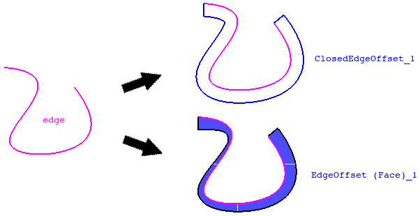
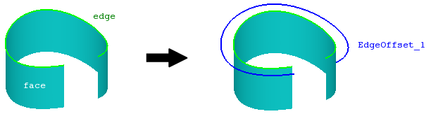
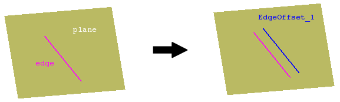

cfdmsh 4.0 documentation
cfdmsh 4.0 documentation cfdmsh 4.0 documentation


Creates an offset of an edge.
This function first extrudes the input edge so as to have a face from which to create normal vectors defining the offset direction at each position along the edge. The extrusion direction is given by the input edge plane normal. This plane is by default created by closing the input edge with an additional edge linking its boundaries and by creating a planar face from these two edges. Then, many vertexes are created along the input edge and translated following local normal vectors. Then, a spline is created from this set of translated vertexes.
The offset can be "closed", that is two additional edges linking the boundaries of both source edge and offset can be added.
The user can also ask for creating a face linking the input edge to the offset.
def MakeEdgeOffset( dist, edge = None, pos = [0, 1], face = None, plane = None, np = 20, curv = True, close = False, rebuild = True, tol = 1e-7, rev = False, single = True, add = True, infa = False, dim = 1 ):



| Name | Description | Type | GUI selection [?] | Selection by name [?] | Recursive [?] | Default value |
|---|---|---|---|---|---|---|
| dist | The offset distance. Must be an list to create a variable offset. | Float or List of Floats |
- | - | - | - |
| edge | The input edge. | Edge | yes | yes | yes | None |
| pos | The positions on the source edge (0 < pos < 1). Only necessary if the dist argument is an list. |
List of Floats |
- | - | - | [0,1] |
| face | See here. | Face | - | yes | - | None |
| plane | See here. If the input edge is straight, the default plane is the OXY plane. | Face | - | yes | - | None |
| np | See here. | Integer | - | - | - | 50 |
| curv | See here. | Boolean | - | - | - | True |
| rebuild | In case dim = 2, defines if the input edge has to be rebuilt in the same way than the offset edge. | Boolean | - | - | - | True |
| close | If equals True, the offset edge is linked to the source edge by two additional edges. | Boolean | - | - | - | False |
| tol | See here. | Float | - | - | - | 1e-7 |
| rev | See here. | Boolean | - | - | - | False |
| single | See here. | Boolean | - | - | - | True |
| add | See here. | Boolean | - | - | - | True |
| infa | See here. | Boolean | - | - | - | False |
| dim | See here. | Integer | - | - | - | 1 |
| dim Value [?] | single Value [?] | Type | Number | Name |
|---|---|---|---|---|
| 0 | False | Vertex | n | "EdgeOffset (Vertex)" |
| 0 | True | Compound of Vertexes | 1 | "EdgeOffset (Vertexes)" |
| 1 | False | Edge | 3 | "ClosedEdgeOffset (Edge)" |
| 1 | True | Compound of Edges | 1 | "EdgeOffset" or "ClosedEdgeOffset" |
| 2 | - | Face | 1 | "EdgeOffset (Face)" |
from cfdmsh import * # To adapt to the cfdmsh installation method
vertex1 = geompy.MakeVertex(0, -30, 0)
vertex2 = geompy.MakeVertex(-30, 0, 0)
vertex3 = geompy.MakeVertex(0, 30, 0)
arc = geompy.MakeArc(vertex1, vertex2, vertex3)
face = geompy.MakePrismDXDYDZ2Ways(arc, -10, 0, 10)
AddToStudy(arc, "arc")
AddToStudy(face, "face")
edge_offset_1 = MakeEdgeOffset(10, arc)
edge_offset_2 = MakeEdgeOffset([10, 30], arc)
edge_offset_3 = MakeEdgeOffset([10, 30, 20], arc, [0, 0.2, 1], rev = True)
edge_offset_4 = MakeEdgeOffset(10, arc, face = face)
edge_offset_5 = MakeEdgeOffset(10, arc, face = face, dim = 2)
The input edge has to be open.
In addition, if the input edge is straight, it is also necessary to set the face or the plane argument so as the function knows the offset direction
cfdmsh 4.0 documentation
tougeron-cfd.com © 2016